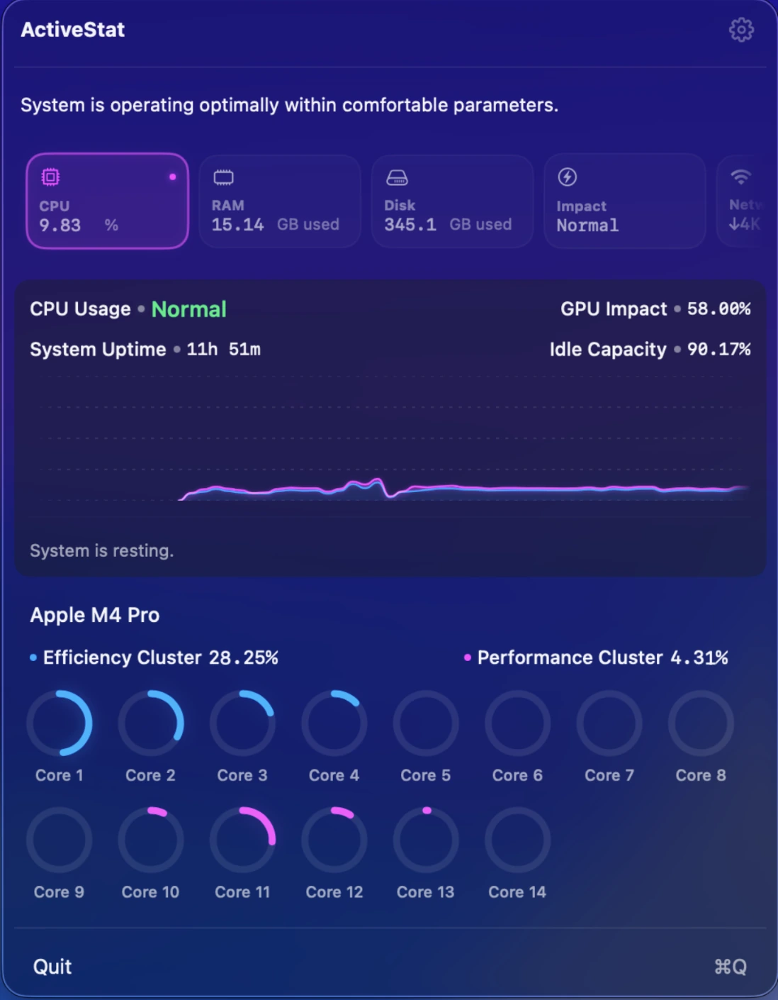
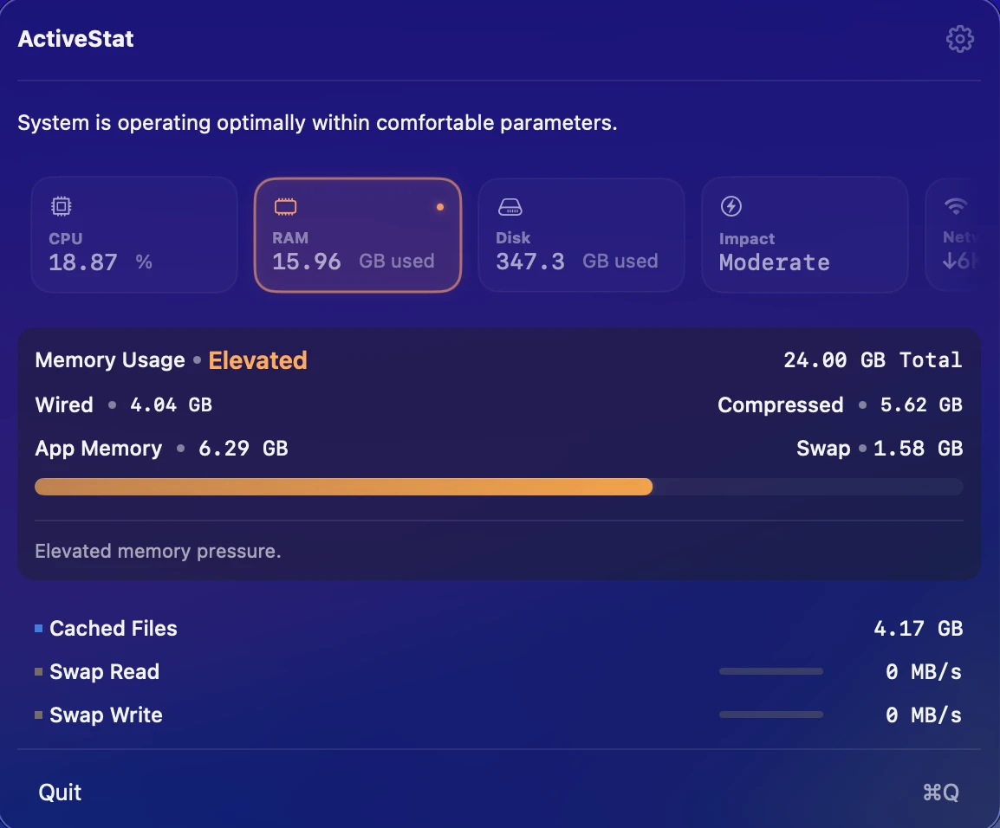
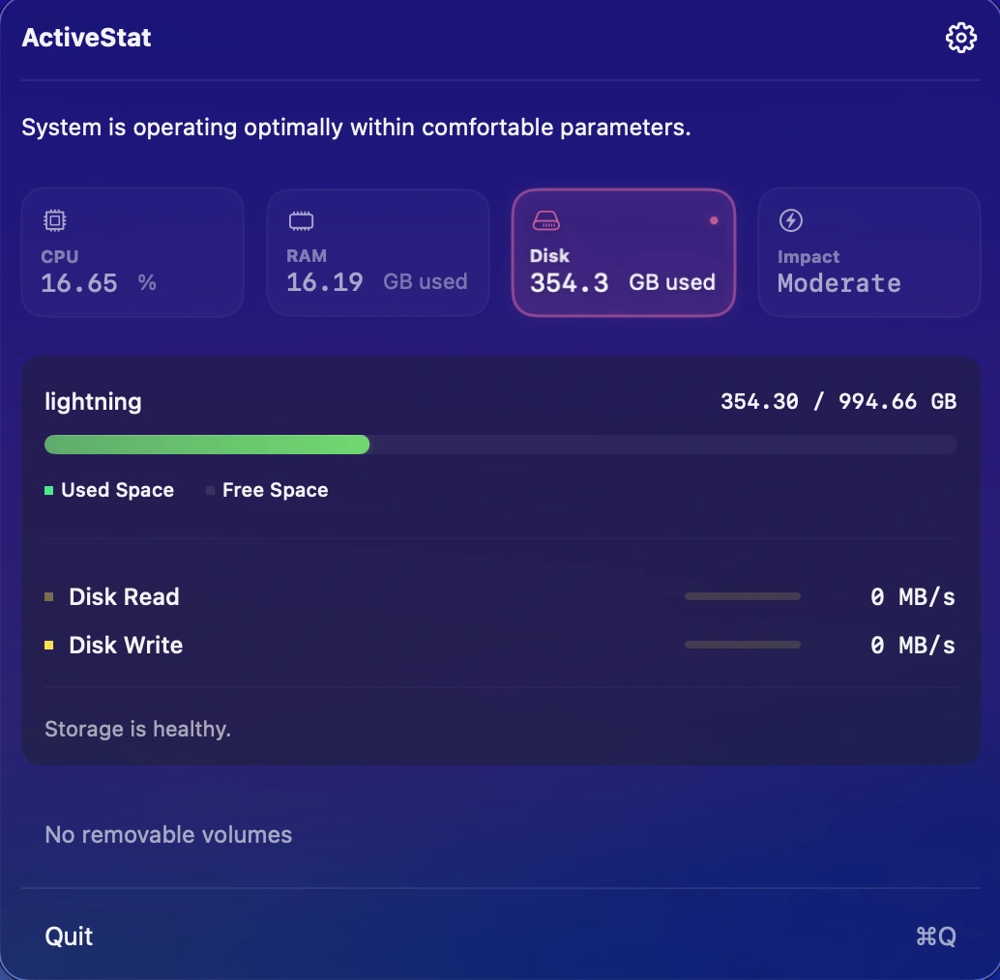
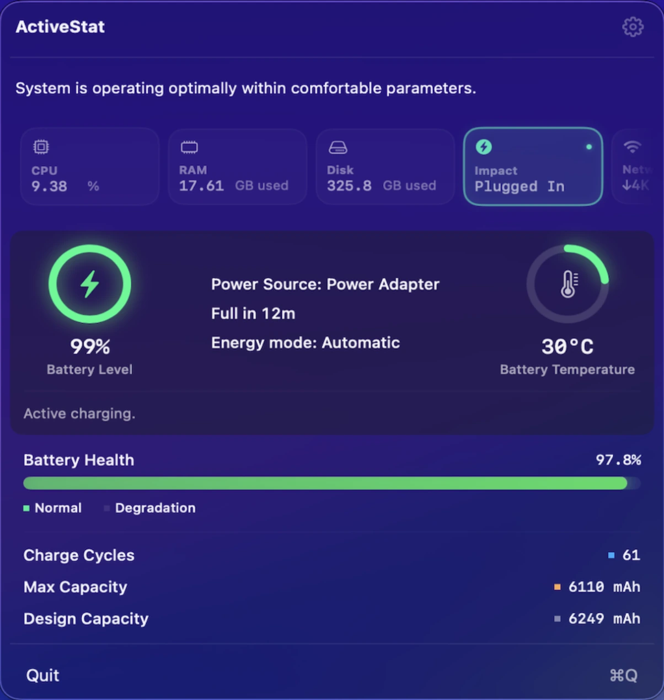
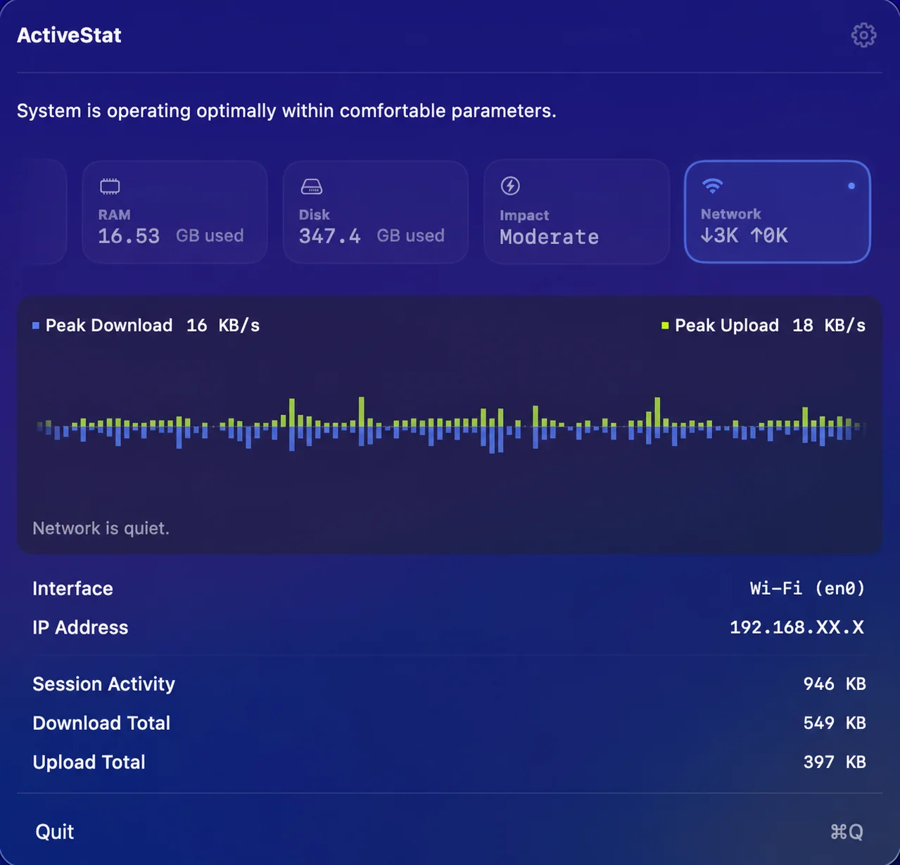
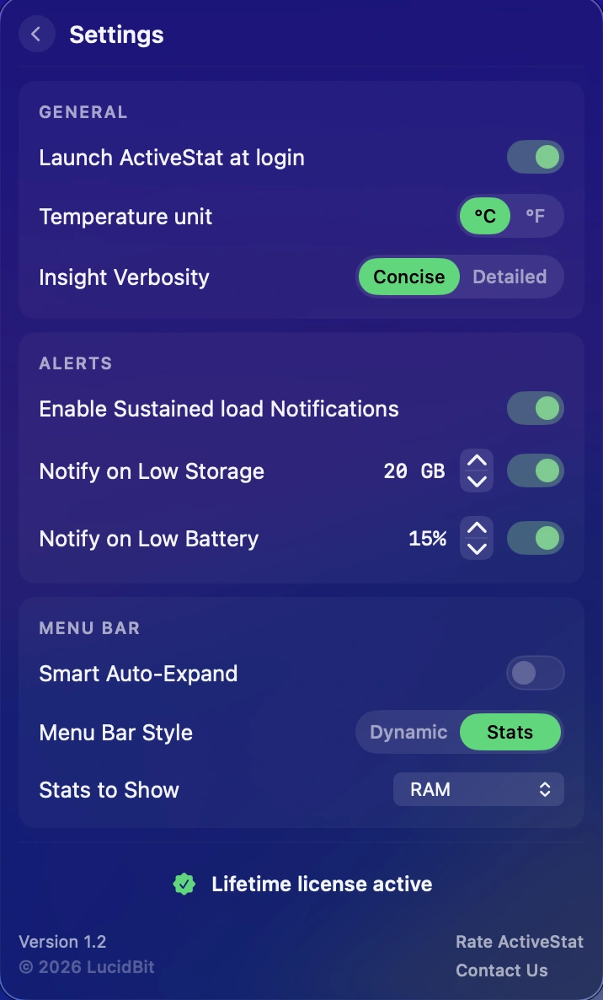

Performance Monitoring · Menu Bar
ActiveStat
Performance. Simplified.
Your Mac is powerful. Understanding its performance should be effortless. ActiveStat is a calm system observer — delivering high-fidelity CPU, RAM, disk, battery, and network telemetry in a clean, minimal interface. Quiet when your Mac is efficient. Clear when it matters.

CPU Activity
Deep visibility into processor performance. Track total usage, individual core load, cluster activity, system uptime, and idle capacity with precision.

Memory & Swap Clarity
Understand where your RAM goes. Clear breakdowns of App Memory, Wired, and Compressed memory — with visual indicators when macOS begins using SSD swap.

Disk Telemetry
Live read and write speeds with daily tracking totals. See how storage activity evolves throughout your workflow on both internal and removable volumes.

Intelligent Energy Impact
A real-time energy classification powered by CPU load, thermal state, and memory pressure. Includes battery health data and time-remaining estimates on MacBook models.

Network Activity
Live download and upload speeds with a smooth area chart that scrolls in real time. Drill into active interfaces, session totals, and peak throughput — and see immediately when your Mac goes offline.

Minimalist, Respectful UI
A refined glass interface designed to stay out of the way. Customise your dashboard with Smart Auto-Expand, Insight Verbosity, and granular alert controls.
Core Features
Smart Insight Engine
Real-time system interpretation — not just raw numbers. Monitor thermal state, energy impact, and core behavior with contextual summaries.
Sustained Load Engine
Filters out transient spikes. The UI only highlights state changes when the load is truly sustained, keeping the experience calm and stable.
Battery & Thermals
Track real-time battery temperature, cycle count, and design capacity. Includes time-remaining estimates for MacBook models.
Network Activity
Live download and upload speeds with a scrolling area chart history. Interface detail, session totals, and automatic offline detection — all in one view.
Built for Apple Silicon
Optimised for M-series Macs. View Efficiency and Performance core clusters independently to see how work is distributed.
Strict Privacy
No analytics. No tracking. All telemetry processing and analysis run strictly locally on your Mac.
One-Time Purchase
No subscriptions or hidden costs. A single purchase unlocks lifetime access to ActiveStat and all future updates.
FAQ
What does ActiveStat monitor?
CPU usage with separate Performance and Efficiency core breakdown, RAM (App, Wired, Compressed, plus SSD swap), disk read/write across volumes, battery (charge, cycle count, design capacity, temperature), network download and upload speeds with interface detail and a scrolling chart history, thermal state, GPU usage, and a real-time energy classification. The menu bar shows what you pick — CPU + RAM, CPU only, RAM only, disk, or network speeds — and the dropdown shows the rest.
Will it slow my Mac down?
No. ActiveStat samples at low frequencies, sleeps when the dropdown is closed, and is designed to be invisible to your performance.
Is it Apple Silicon native?
Yes — native arm64 build that breaks out Performance and Efficiency core clusters separately on M-series Macs. Runs on macOS 14 (Sonoma) or later, on Apple Silicon and supported Intel Macs.
Does ActiveStat need any special permissions?
No kernel extensions, no privileged helpers. ActiveStat is sandboxed and uses Apple's public APIs only.
Where does my data go?
Nowhere. Everything stays on-device. No account, no telemetry, no analytics.
Is it a subscription?
No. $6.99 once on the Mac App Store, with a 7-day free trial. One purchase, all future updates.